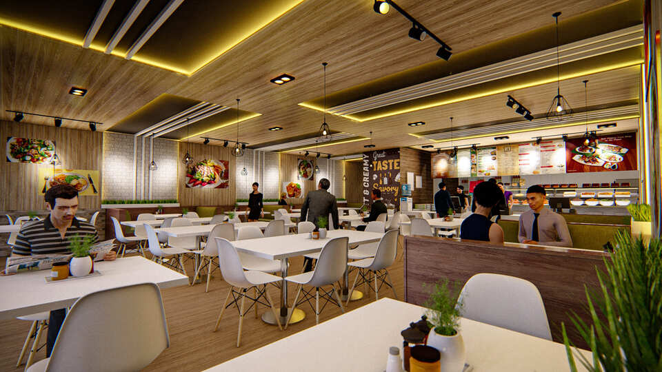
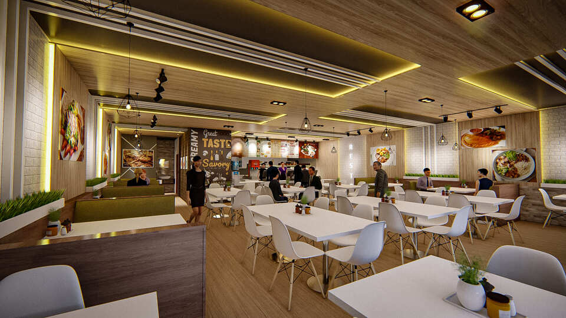
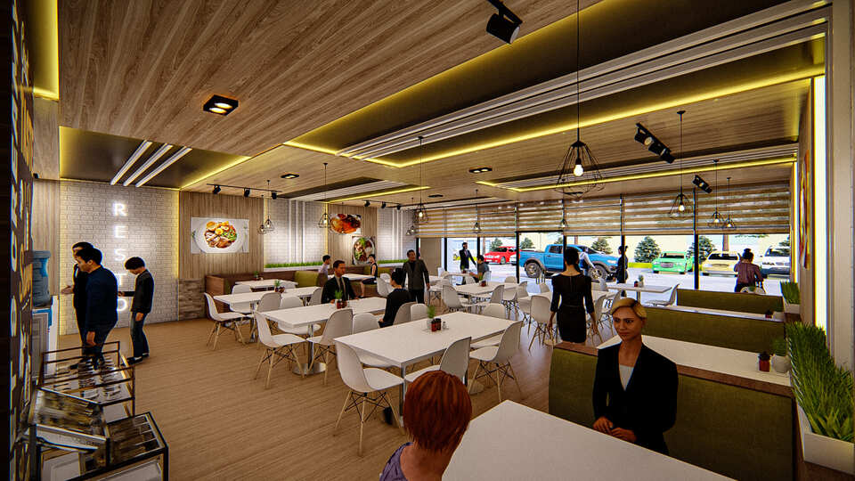
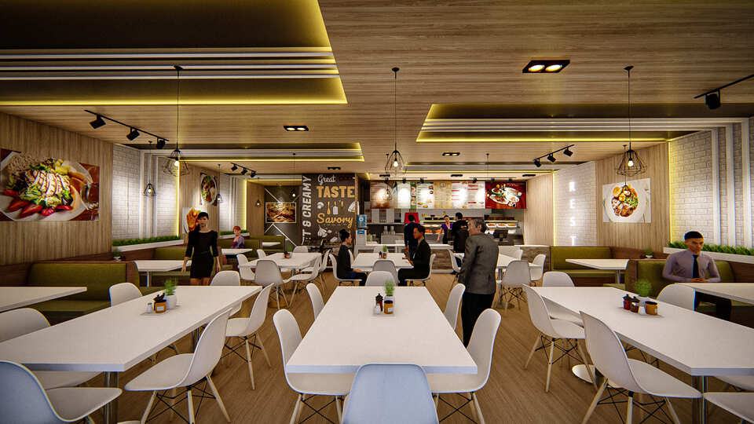
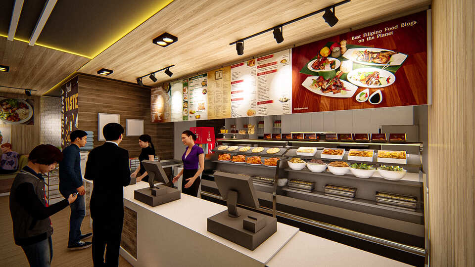
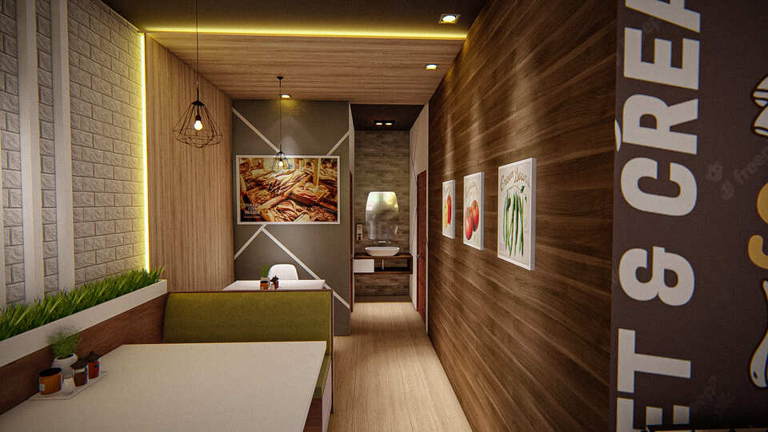

The interior design of Flor’s Restaurant features a warm, contemporary, and inviting dining environment that combines natural materials, functional planning, and modern lighting. The overall design uses wood-finish wall panels, ceiling surfaces, and flooring to create a warm and cohesive atmosphere, while white brick accent walls provide contrast and a lighter visual character. The dining area is furnished with clean-lined white tables and modern molded chairs, complemented by olive-green upholstered booth seating that adds color, comfort, and a subtle connection to nature. The ceiling design is a major architectural feature, incorporating layered wood panels, recessed sections, linear details, track lights, and warm concealed LED lighting that creates depth and a cozy ambiance. Decorative pendant lights further enhance the dining experience and serve as visual accents. Large windows provide natural light and a connection to the exterior, while built-in planters and greenery soften the interior and contribute to a more refreshing atmosphere. The restaurant also incorporates food-themed wall graphics, menu boards, and display areas as part of its visual identity, making the dining space both functional and expressive. Overall, the design successfully balances warmth, modern simplicity, efficient circulation, and a casual dining atmosphere, creating a comfortable space suitable for both individual diners and groups.




